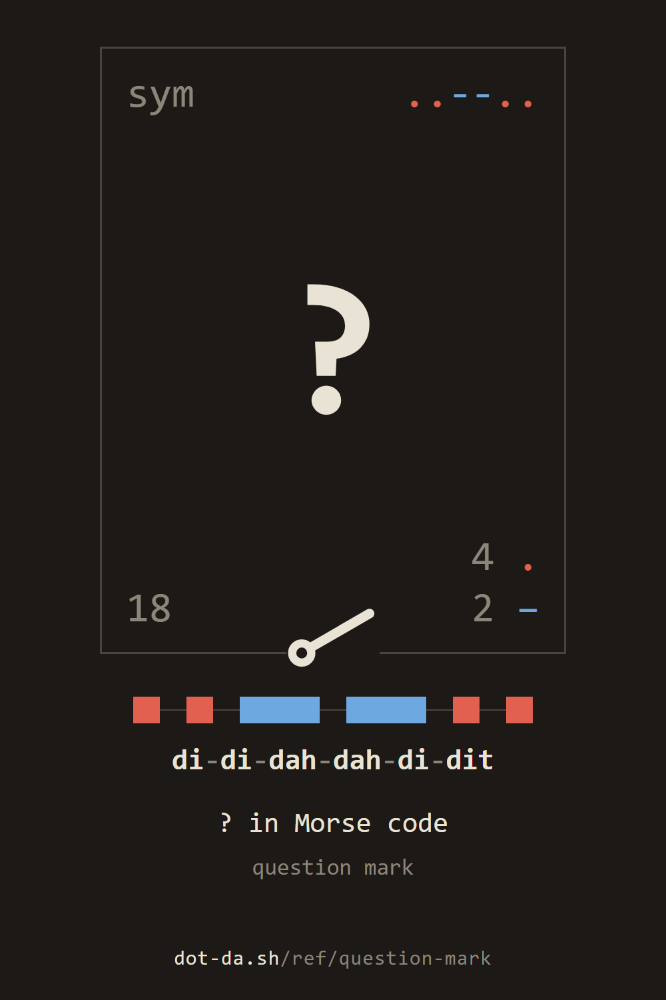
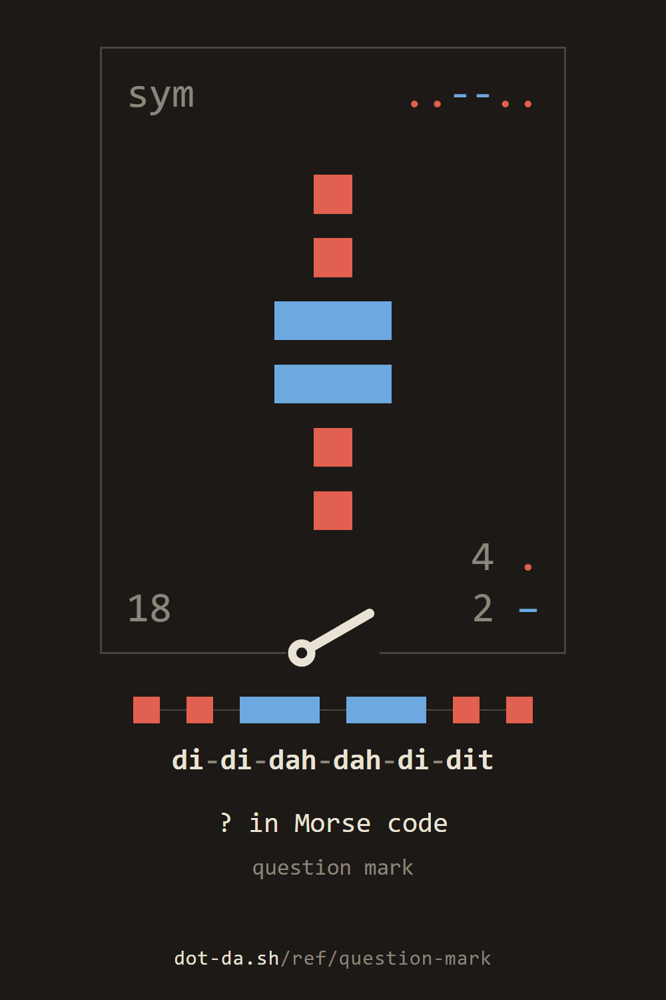
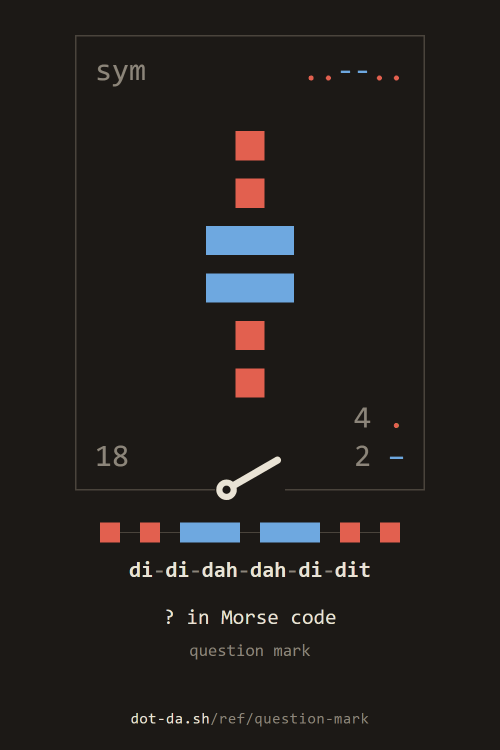

the reference / ?
? (question mark) in Morse code
the symbol ?
key it in the station · its card in the reference · hear it (.wav)
to keep








For programs: the parts as JSON, the sound, the keyed card.
the reference / ?
key it in the station · its card in the reference · hear it (.wav)



For programs: the parts as JSON, the sound, the keyed card.